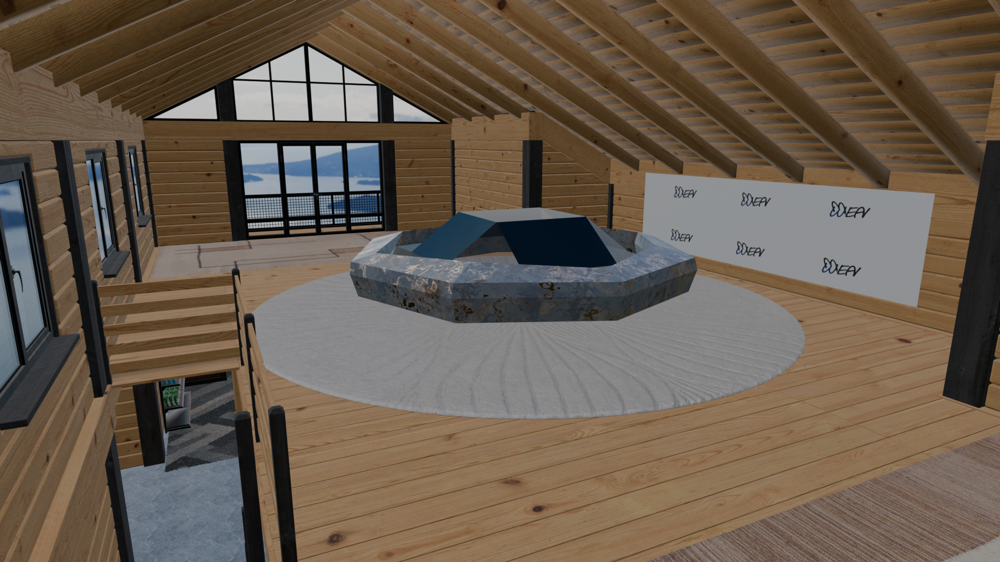
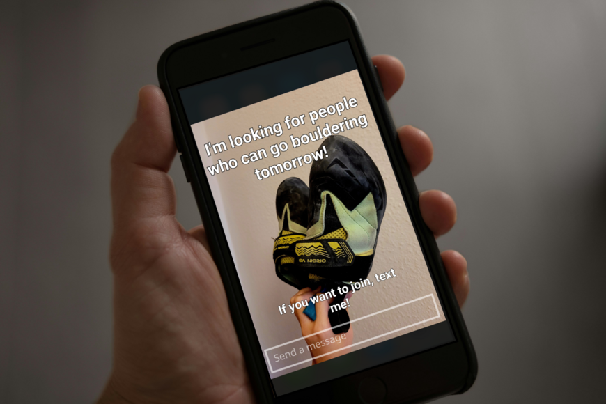

Virtual Meeting Rooms
WiHaMen has not only quiet and uninterrupted rooms for video conference but also has rooms with all the equipment for Virtual Reality (VR) meetings (WiHaMenVR).
Percentage of employees working from home in Germany (Source: eurostat).
Ability to choose work hours and pace, leading to better time management.
Less face-to-face interaction can lead to loneliness or lack of belonging.
Saves time and money, reduces stress from traffic or public transport.
Home becomes office, making it hard to separate work and personal life.
Less vehicle usage decreases environmental impact.
Remote communication may cause misunderstanding or delays in information sharing. Household distractions (TV, chores, family) can lower concentration
WiHaMen aims to build a new society structure of working
, which links communication technologies and social capital.
WiHaMen has not only quiet and uninterrupted rooms for video conference but also has rooms with all the equipment for Virtual Reality (VR) meetings (WiHaMenVR).
WiHaMen offers rooms with all the equipment for our VR-meeting platform. WiHaMenVR is very easy to use because of its simplicity. VR controllers are not needed. You use only your hands and a keyboard that you are already familier with. WiHaMenVR is designed for small team meetings (up to 8 people). The meetings take place in a cabin with beautiful mountain views. If some members want to have a more private discussion afterward, they can go downstairs to a cozy, comfortable space.
WiHaMenVR enables you to feel their presence around you and communicate with them through eye contact.
If you attend a plenary session, so you don't need a close conntact with people, you can use the quiet and uninterrupted rooms for your meeting. There is a webcam if you don't have a proper one. There won't be anyone who interrupt you while your meeting and you also won't bother your family or roomates.
Big screens are available. You can just bring your laptop and work here. There are both open, flexible work areas and quiet, private rooms — depending on your needs.
Open and Flexible work area for the people who like more dynamics. All the desks and chairs are mobile. You can move them esaily to work with others. All of the seats have a big monitor, so you can work more efficiently.
Quiet-and-Private area for the people who need a quiet place to focus on their work. All workstations have even a larger monitor than in the Open-and-Flexible and are equipped with a privacy panel.
Since you all live near a WiHaMen branch, you are basically neighbors. You can take yoga or meditation courses together or are free to build your own clubs (vollyball, board game, ets.). WiHaMen offers a place for your physical and mental well-being.
There are indoor and outdoor dining places for lunch or a cup of coffee. WiHaMen provides yoga, mediation, and communication courses to support your physical and mental well-being.

 The daily grind would be slowly wearing you down if you don't have any other activities except from your work. To find small everyday accomplishments, you can connect with people who don’t necessarily work with you but share the same interests. If you already have a hobby, it'd feel great to help others to learn about it. If you don’t have one yet, you can discover one here with your coworkers. WiHaMenStory offers a funtion that allows people to upload temporary posts to find neighbors for their clubs. You can either upload a post or send a message to find others who enjoy the same hobbies!
Do you use social media every day?You can choose where to live without having to worry about commuting.
As a remote worker, it can be difficult to completely leave the city and country where your company is located. However, living in the center of a big city is expensive, and the dense population can be stressful. WiHaMen branches are located in the place where you can save on rent, stay connected to a big city, and enjoy a natural environment. Let’s commute to work by bike!
If you have any questions or want to join this project as a cofounder,
feel free to join the WiHaMen Discord channel: Click the icon
.
Email wihamen.gg@gmail.com